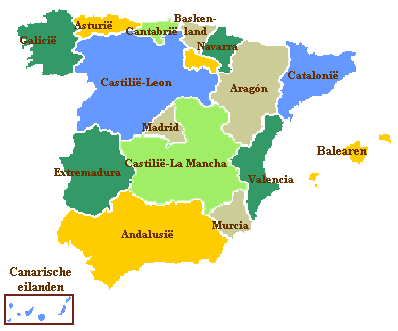
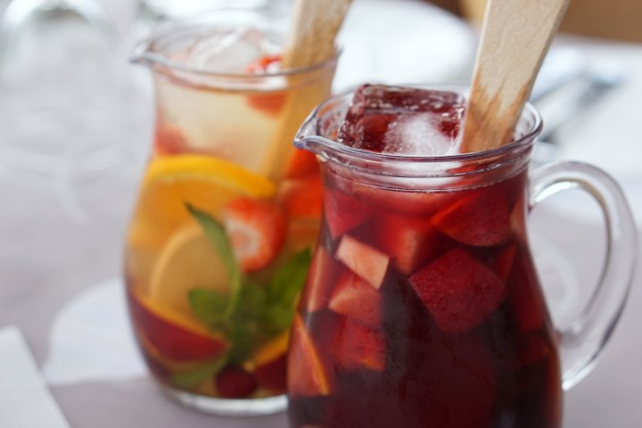
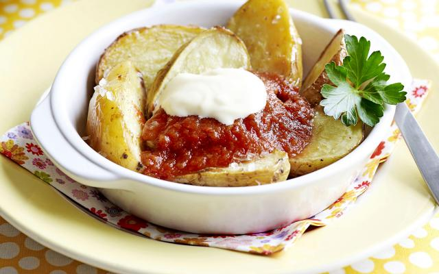

- Spanje kent vier officiële talen: Castiliaans (Spaans), Catalaans, Baskisch en Galicisch.
- De meest populaire vakantiebestemmingen van Spanje zijn de Costa Brava, Costa del Maresme, Costa Dorada en de Costa del Sol.
- Spanjaarden luiden het nieuwe jaar in door om klokslag 12 uur een druif te eten. Een traditie die de wijnbouwers bedachten om zo van hun overtollige druiven af te komen.
- In Spanje kun je volop kiezen uit mooie stranden. Het land heeft een kustlijn van maar liefst 4964 kilometer.
- Spanje is het enige land in Europa, afgezien van een paar Portugese eilandjes, waar bananen groeien.
Weetjes & Locatie

Recepten
'Snelle Sangria'
Ingrediënten:
- 1 Citroen
- 2 medium sinaasappels
- 250g diepvries zomerfruit
- 1 liter spaanse rode wijn
- 200ml sinaasappellikeur
- 1 liter frisdrank lemon-lime
Bereiding:
- Boen de citroen en sinaasappels schoon. Snijd de citroen en sinaasappels in zo dun mogelijke schijfjes en doe ze in een grote kan. Voeg het zomerfruit toe.
- Schenk de wijn, likeur en frisdrank erbij. De sangria is klaar als het diepvriesfruit is ontdooid; dit duurt ca. 15 min. Serveer in glazen met een lange lepel en een rietje.
Patatas Bravas
Ingrediënten
- 300g aardappelen
- 1/2 ui
- 200ml tomatensaus
- 1/2 kl azijn
- 1/4 kl harissa
- 1/2 laurierblaadje
- 1/2 rode paprika
- 1 teentje knoflook
- 100ml witte wijn
- 1 kl paprikapoeder
- 1/2 kl suiker
Bereiding:
- Verwarm de oven voor op 230°C. Boen de aardappelen schoon en snij ze in partjes. Pel en snipper de ui en de knoflook.
- Spoel de paprika, snij in blokjes. Fruit de ui en de knoflook in olijfolie. Doe er het paprikapoeder en de paprikablokjes bij en fruit mee.
- Blus de paprika's met de wijn en de tomatensaus. Doe er de laurier, harissa, azijn, suiker en zout bij, dek af en laat 20 minuten stoven. Neem de laurier weg en mix de saus fijn.
- Doe ondertussen de aardappelen in een ovenschaal en besprenkel ze met olijfolie. Zet ze 20 minuten in de oven. Serveer de aardappelen met de saus en een lepeltje mayonaise.